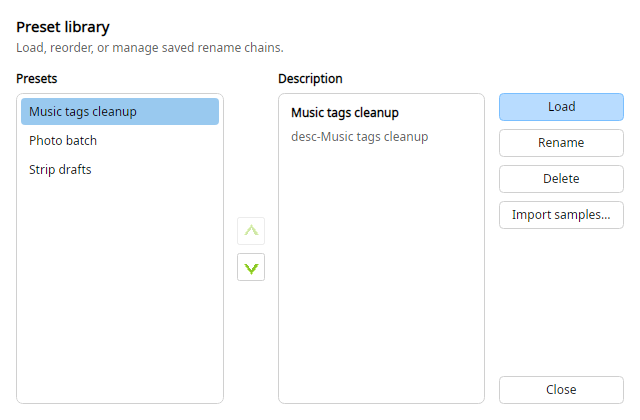

Magic File Renamer Help
Preset Manager

Preset Manager.
Preset Manager lists saved presets, loads one into the
Filter Chain, renames or edits descriptions, and deletes
presets. See also Save a preset.
-
Open from the Presets button above the Filter Chain (or Filters menu).
-
Presets are JSON under your AppData finebytes MFR folder (not MFR 7 .mps
/ XML). Sample presets can be imported when offered.
-
Select a preset to see its description. Load with Load or double-click. Delete removes the
selected preset file(s).
-
You can also load quickly from the Presets drop-down on the Filter Chain toolbar without
opening the manager.